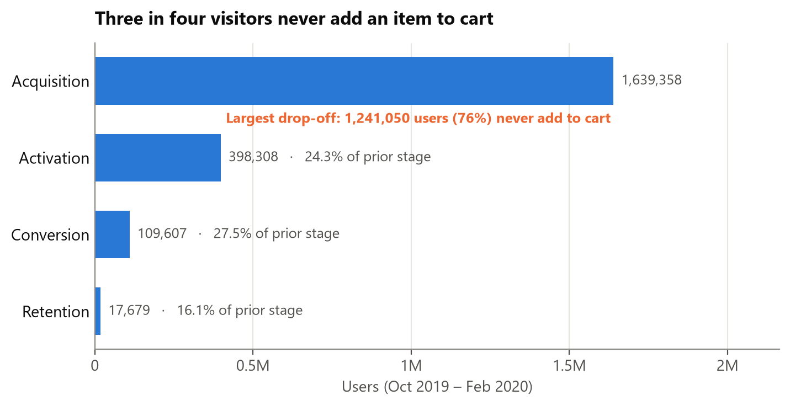
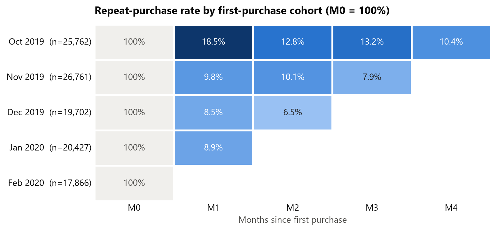
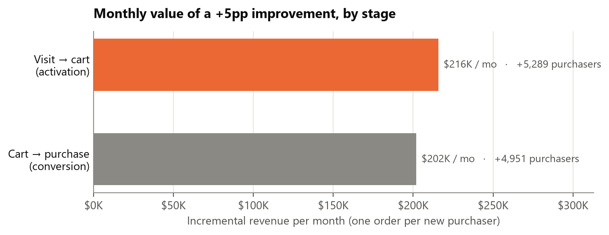

I analysed 19.6 million de-duplicated events from 1.64 million users of an online cosmetics store across a four-stage funnel: visit, add to cart, purchase, repeat purchase. The largest loss is the first step: 1,241,050 users (75.7%) never add an item to cart, which is 77% of all users lost anywhere in the funnel. At current traffic of 387,836 users a month, a 5-percentage-point lift in visit→cart is worth an estimated 5,289 additional purchasers and $216K in revenue per month ($2.6M a year, +17% on a $1.27M monthly base). Retention is the second structural gap: only 9.1% of new customers buy again the following month. I would prioritise activation, specifically turning single-product visits into multi-product visits (63% of visitors, activating at 10.9%). Every experiment should be judged on visit→purchase, not cart rate, because October delivered a 10-point cart-rate jump that produced no extra purchasers.
Each stage is a strict subset of the one before, so drop-offs add up. Users are counted once across the five months.
| Stage | Definition | Users | Conv. from prior | Drop-off |
|---|---|---|---|---|
| Acquisition | Any event in the period | 1,639,358 | — | — |
| Activation | Added ≥ 1 item to cart | 398,308 | 24.3% | 1,241,050 (75.7%) |
| Conversion | …and completed ≥ 1 purchase | 109,607 | 27.5% | 288,701 (72.5%) |
| Retention | …and purchased in ≥ 2 calendar months | 17,679 | 16.1% | 91,928 (83.9%) |

The two middle transitions lose users at similar rates (75.7% and 72.5%). Activation still dominates because it applies to a base four times larger. End-to-end, 6.7% of visitors buy and 1.1% buy in more than one month.

Month-1 retention is 9.1% for the Nov–Jan cohorts (8.5–9.8%) and 11.7% weighted across all four measurable cohorts. October's 18.5% is inflated: the log begins on 1 October, so that cohort includes established customers who were not new. After M1 the curve flattens. The November cohort still has 10.1% buying in M2 and 7.9% in M3. Customers are lost at the first repeat purchase, not gradually after it.
Cohort value is not improving. At equal age, cumulative revenue per customer after two months fell from $49.86 (November cohort) to $47.15 (January cohort), a 5% decline.
Activation loses the most users in absolute terms (1,241,050), so a fixed rate improvement there moves the most people. Sizing it uses the monthly funnel averaged over five months: 387,836 users a month, 25.5% visit→cart, 27.3% cart→purchase, $40.79 AOV.
| +5pp visit→cart (25.5% → 30.5%) | Per month |
|---|---|
| Additional users adding to cart (387,836 × 5pp) | 19,392 |
| Additional purchasers (× 27.3% cart→purchase) | 5,289 |
| Additional revenue (× $40.79 AOV, one order each) | $215,772 |
| Annualised · share of $1,269,654 monthly baseline | $2.59M · +17.0% |

The estimate is conservative in one respect: it counts one order per new purchaser and no repeat purchases. It is optimistic in another: it assumes the extra carters convert at today's 27.3%. An equal lift at checkout is worth $202K a month, so activation only wins if new carters convert at ≥ 25.5%. October is the warning. Its visit→cart rate was 33.5% against 23.5% for Nov–Feb, but cart→purchase was 19.0%, and visit→purchase stayed in its 6.4–8.4% band. Each point of activation lift is worth about $43K a month if it carries through to purchase.
The diagnostics in notebook §7 locate the activation loss precisely. 63.0% of users who view a product view only one, and they activate at 10.9%, against 32.9% at 3–4 products and 54.3% at 5–9. And 76.5% of users who ever add to cart do so in their first session.
cart was logged, and the data cannot distinguish the two. There is no order ID, so orders are inferred from sessions. 911 purchasers have no cart event. How user_id is assigned is undocumented: if it is per device, acquisition is overcounted and activation understated.